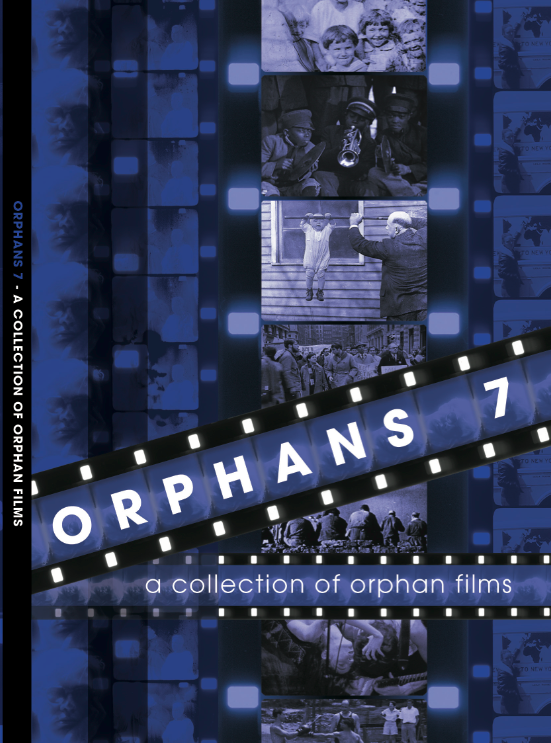

MOVING PICTURES AROUND THE WORLD
WED/7 . . . . . . THURS/8 . . . . . . FRI/9 . . . . . . SAT/10
In April 2010, the Orphan Film Symposium marked its seventh iteration. More than 300 symposiasts saw and heard 80 presenters from 17 countries screening and discussing 80 works (film, video, and digital) dating from 1894 to 2010. New York University hosted the event at the School of Visual Arts Theatre.
Read the 2010 program notes by clicking here.
Click on a day of the week (right, above, or below) to see the full program listings.
Listen to audio recordings of the 2010 symposium: talks, introductions, discussions, and music.
(Click the icons.)
To see more videos: hover over the thumbnail images (left) or click on the VIDEO button.
 Attendees received a limited-edition DVD of 11 films (and a video):
• The Passaic Textile Strike reel 5 (International Workers Aid, 1926)
• Jenkins Orphanage Band (Fox Movietone News, 1928)
• World's Youngest Acrobat (Hearst Metrotone/Fox Movietone, 1929)
• Tales from Tamiment (Louis W. Kellman, ca. 1932) excerpt
• Berlin Olympics home movies (unknown, 1936) from University Archives at NYU
• With the Abraham Lincoln Brigade in Spain (Cartier-Bresson, 1938)
• NYU Surveillance Film of 3/6/68 Dow Chemical Demonstration (NYU Campus Security, 1968)
• Ro-Revus Talks About Worms (South Carolina ETV, 1971)
• footage from the NYC Downtown Scene (Amos Poe, ca. 1978)
• let's just kiss + say goodbye (Robert Blanchon, 1995)
• Homage to H. Lee Waters (Bill Brand, Julia Nicoll, Colorlab, 2004)
The Orphans 7 disc was the work of MIAP students Stefan Elnabli, Walter Forsberg, Jonah Volk, and NYU Libraries moving image preservation specialist Alice Moscoso. The Cinema Ritrovato DVD Awards named it Most Original Contribution to Film History, for opening "a rich and fascinating area of film history...with magnificent, in-depth commentary."
Below: Trailers for Orphans 2010. Produced by Jim Bittl and Russell Sheaffer.
• WATCH: Progress, indeed.
John Wayne advocates the work of Helen Hill and her award-winning fellow filmmakers Danielle Ash and Jodie Mack.
• WATCH: Through the images in this dark box.
Sampling of A Few Notes on Our Food Problem (1968, USIA), with voice of its director James Blue, and General Motors Around the World (1927).
• WATCH: We never tire speaking of Orphans.
Soundtrack sampling from We Never Tire Speaking of Mothers (1975, USSR) from the Communist Party USA Collection, NYU Tamiment Library.
• WATCH: Sound and Vision.
Music, played backwards, from Danielle Ash's Pickles for Nickels (2010), mixed with PD stock footage and a surviving fragment from the obscure Cromwell the Wicked (1926), from the John Maddox Collectin, Library of Congress.